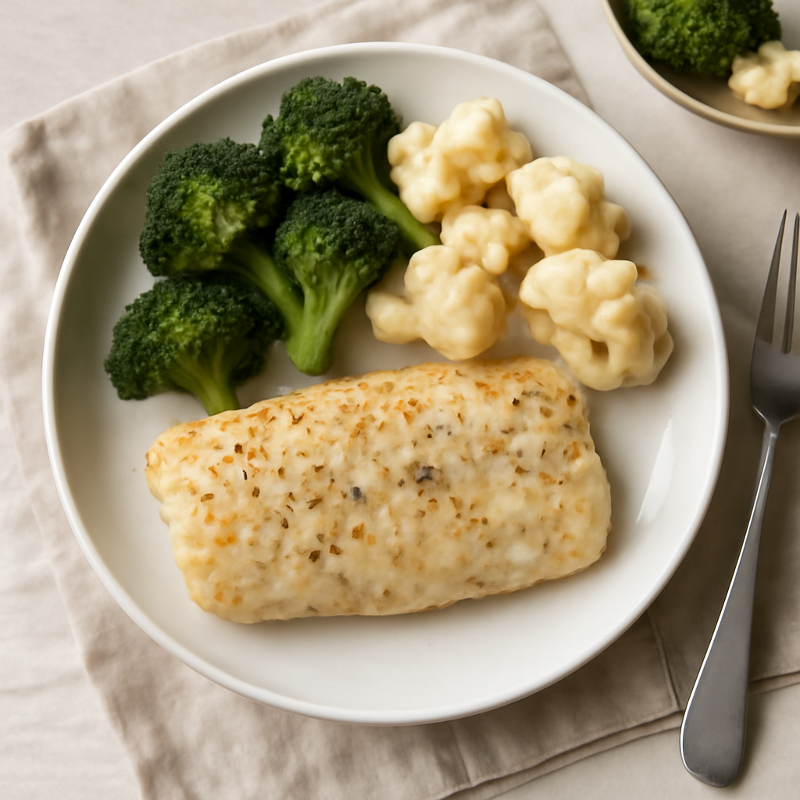

Thursday — Oven-Baked Cod with Broccoli and Cauliflower

Cook Time: 30 minutes
Method: Oven
pescatarian30 minutes
Ingredients for 6
- 6 cod fillets (about 1.5 lbs)
- 2 cups broccoli florets
- 2 cups cauliflower florets
- 2 tbsp olive oil
- 1 lemon (for juice)
- Salt
- Pepper
Instructions
- Preheat oven to 400°F (200°C).
- Place cod on a baking sheet, drizzle with lemon juice, olive oil, salt, and pepper.
- Arrange broccoli and cauliflower around the cod, drizzle with olive oil and season.
- Bake for 20–25 minutes until cod is flaky and vegetables are tender.
Toddler Notes
- Ensure fish is deboned and cut into small pieces for safety.
← Back to weekly plan